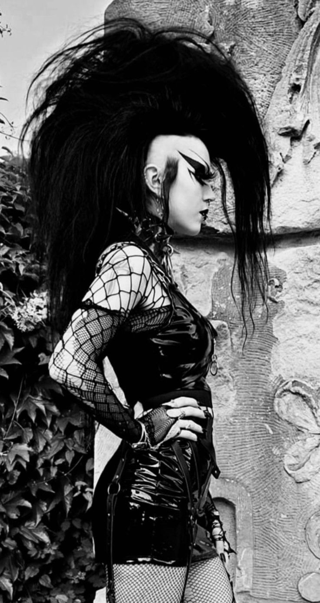

La subcultura gótica es un movimiento subcultural (o cultura underground) que surgió en el Reino Unido
entre finales de los años 1970 y mediados de los años 1980 dentro de la escena del rock gótico,
una derivación del post-punk con influencias del glam rock. El nombre, subcultura gótica, deriva
directamente del género musical.
No es solamente una forma de vestirse, sino tambien una comunidad cultural diversa que encuentra
insipiración en lo misterioso, lo melancólico y lo romántico.
Música gótica
La música es uno de los pilares fundamentales de la subcultura gótica. Sus raíces se encuentran en el post-punk
británico, con sonidos atmosféricos, bajos prominentes, guitarras experimentales y voces profundas.
Sus bandas representativas:
Bauhaus:Considerada una de las bandas fundacionales del gothic rock.
The sisters of mercy: reconocida por sus sonidos oscuros y ritmos marcados.
Siouxsie and the Banshees: Influyó en el post-punk y la estetica alternativa.
The cure: Exploró sonidos melancólicos y una estética asociada a la escena gótica.
Joy Division: fue una influencia importante para el desarollo post-punk.
The Cure
Joy Division
Siouxsie and the Banshees
The Sisters of Mercy
Bauhaus
Eventos y festivales
La subcultura gótica ha dado lugar a numerosos eventos y festivales a nivel mundial, donde los seguidores de esta cultura se reúnen para disfrutar de la música, la moda y la estética gótica.
Estética y moda
La estética gótica es una forma de expresión individual
que combina influencias del romanticismo, la época
victoriana, el punk y el arte oscuro. Aunque el negro
es uno de sus colores más representativos, la subcultura
incluye una gran variedad de estilos y formas de vestir.
Estilos dentro de la escena gótica
Trad Goth: raíces del gothic rock y estética de los años 80.
Romantic Goth: encajes, terciopelo y referencias románticas.
Victorian Goth: corsés, prendas antiguas y detalles ornamentales.

Deathrock: influencias punk, prendas desgastadas y peinados llamativos.
Elementos característicos
Ropa negra, encajes, terciopelo y cuero.
Botas, plataformas y accesorios metálicos.
Maquillaje expresivo y delineados intensos.
Joyas con cruces, flores, lunas y otros símbolos.
Referencias medievales, románticas y victorianas.
No existe una única manera de vestirse para formar
parte de la subcultura. Cada persona puede adaptar
estos elementos a sus propios gustos e identidad.
Uno de los prejuicios más comunes consiste en relacionar automáticamente la estética gótica con el satanismo o el rechazo a la religión.
Sin embargo, la subcultura gótica no es una religión ni tiene un sistema de creencias obligatorio.
Dentro de la comunidad existen personas cristianas, ateas, agnósticas y con distintas creencias espirituales. Algunas se sienten atraídas
por la arquitectura de las iglesias medievales, los vitrales, el simbolismo religioso y el arte sacro por su valor histórico y visual.
Mitos y prejuicios
Al igual que otros estilos de vida alternativos y otras subculturas urbanas, La subcultura gótica ha sido objeto de prejuicios e
intolerancia, desde miradas de rechazo hasta agresiones. Los medios suelen relacionarla erróneamente con la depresión, el satanismo
o la violencia, generando estereotipos negativos.
Estos prejuicios se intensificaron tras la masacre de Columbine en 1999, cuyos responsables fueron incorrectamente vinculados con la
estética gótica. Otro caso emblemático fue el de Sophie Lancaster, una joven gótica asesinada en Inglaterra en 2007 junto a su novio, por
ser identificados con esta subcultura. Su muerte se convirtió en un símbolo de la lucha contra la intolerancia y la discriminación.
No debemos juzgar a las personas por su apariencia o estilo, porque la ropa no define su personalidad ni sus valores. Respetar las diferencias es
fundamental para convivir sin prejuicios ni violencia. No hay un estilo de vida correcto o incorrecto, y la diversidad enriquece a la sociedad.
La subcultura gótica es un ejemplo de cómo la expresión individual puede coexistir con el respeto hacia los demás.
La idealizacion de las mujeres góticas
La imagen de la mujer gótica suele aparecer idealizada en redes sociales, películas, videojuegos y otros medios. Muchas veces se la representa
como una mujer misteriosa, pálida, distante, seductora e intelectualmente superior.
Esta idealización puede parecer positiva, pero sigue siendo una forma de encasillar a las personas. Una mujer gótica no tiene que cumplir con un
ideal de belleza, comportarse de manera misteriosa ni responder a las expectativas de otras personas para formar parte de la escena.
La identidad gótica no es un personaje que alguien deba interpretar para satisfacer una fantasía ajena.
 The Cure
The Cure
 Joy Division
Joy Division
 Siouxsie and the Banshees
Siouxsie and the Banshees
 The Sisters of Mercy
The Sisters of Mercy